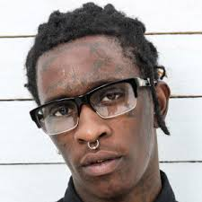

Age: 34
Top Songs: Check, Power, Best Friend, Stoner, F Cancer, Special
Net Worth: $6 million
 Our runner up, and let me tell you it wasn't easy to put him at number two, is none other than Thugger. Young Thug brings to the table a unique style that has never been heard or been close to resembled before. Rapid, high-pitched, and full of energy and rhythm are just some of the words you can use to describe his style. The only way to really understand is to listen to his music, which is very easy to follow along with. His swagger is unreal, almost as much as the number one on this list. I myself am a large Thugger fan, but there are a few minor problems with his rapping game that overshadow his spot on the throne. First, this man is a clown. You can't take him seriously. But more importantly, his songs aren't as meaningful as the number one artists, and that is why by a slim margin he is the second best rapper in the game at the moment.